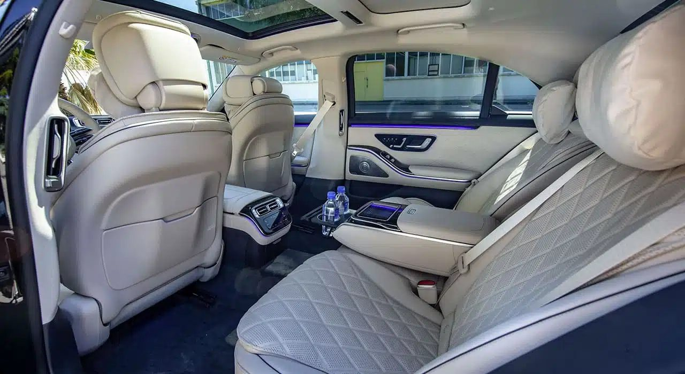
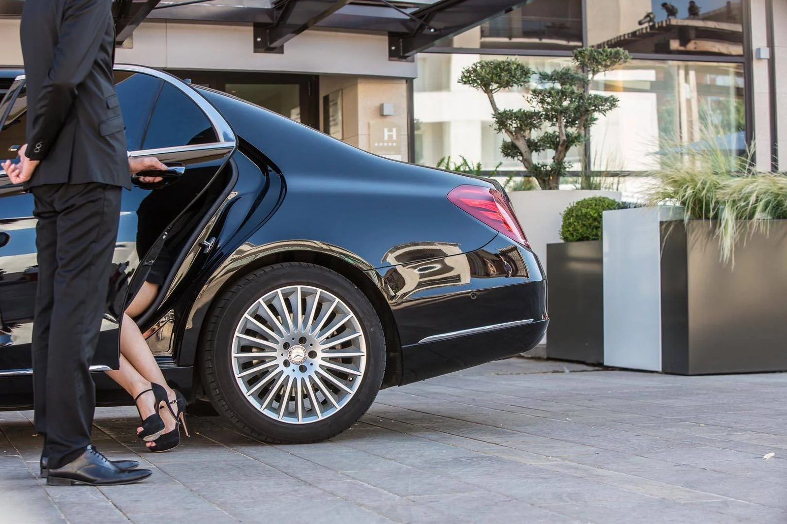
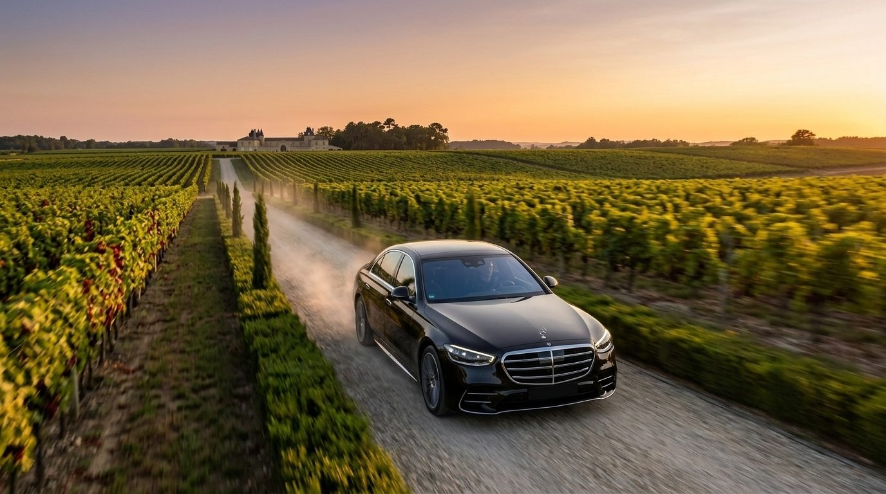

Chauffeur service
Private Chauffeur for Long-Distance Trips: Why Choose This Option?

Covering long distances by car can quickly become tiring, especially during a busy business trip or holiday. Choosing a private chauffeur car changes everything. Lincoln Luxury offers this kind of service to turn a demanding drive into a moment of comfort, whether you are heading to an airport, another city, or organising a wine tour in Bordeaux across several stops.
Travelling without the fatigue of the road
Driving for several hours demands constant vigilance, especially on motorways or in heavy traffic. With a private chauffeur, that concern disappears entirely. You can rest, work or simply enjoy the scenery, without having to handle navigation or the fatigue that builds up mile after mile.
That peace of mind becomes especially valuable on long trips to destinations such as Toulouse, La Rochelle or the surrounding wine regions. A private chauffeur lets you arrive relaxed rather than exhausted — which changes everything when the day doesn't end on arrival.
Comfort designed for long journeys
The luxury travel service offered by Lincoln Luxury relies on a vehicle built for long-duration trips: the Mercedes S-Class. The space, the silence on board and the quality of the ride make a real difference over several hours of driving. Unlike a standard rental, the chauffeur car offers a consistent level of service from departure to arrival.

Passengers can also arrange stops according to their needs. The private chauffeur adapts to the pace you want, which makes the journey more enjoyable, particularly for families or business groups on the road.
A reliable solution for important appointments
For a business trip, punctuality remains essential. A private chauffeur knows the routes and anticipates possible delays, which considerably reduces the risk of being late. That reliability is a decisive advantage whenever a meeting or a connection is at stake.

Lincoln Luxury pays particular attention to this, adjusting departure times according to expected traffic conditions. You can then focus on the purpose of your trip rather than the logistics of getting there.
Long distance and discovering the vineyards
Long distances aren't limited to business trips. They also concern visitors who want to explore several wine regions in a single day. A wine tour taking in the Médoc or Saint-Émilion often involves trips of several dozen kilometres between estates.
In that context, a chauffeur car lets you move between wine visits without hassle. The chauffeur handles the distances between the châteaux, leaving visitors more time to enjoy each tasting — in the Médoc, in Saint-Émilion, or in the Sauternais.

A long journey doesn't have to be an effort. With a private chauffeur, the road becomes a moment, not an ordeal.
Discretion and a personalised service
Every long-distance trip has its own requirements. Some clients want a quiet, uninterrupted journey; others prefer to discuss the best stops with their chauffeur. Lincoln Luxury adapts its service to the preferences expressed, within a discretion that remains the foundation of the trade.
That flexibility also extends to timing, pickup points and choice of vehicle. Personalising the journey contributes greatly to the comfort felt throughout the trip.
Which long-distance trips from Bordeaux?
Demand for a long-distance private chauffeur covers very different types of journeys. A transfer to Bordeaux-Mérignac airport or Saint-Jean train station remains the most common, but many clients also book to reach another city — Toulouse, La Rochelle, Biarritz — or for a same-day return trip to a wine estate further from central Bordeaux.
In every case, the principle stays the same: a single point of contact, a single vehicle, and a chauffeur who already knows the route. Unlike a string of separate ride-hailing trips, there is no break in service between departure and arrival, even when the journey lasts several hours.
What to check before booking
Before choosing a provider for a long trip, a few points are worth clarifying in advance: does the vehicle offered really match the level of comfort expected over several hours of driving? Does the price include tolls and any waiting time? Can the chauffeur adapt to a last-minute schedule change? At Lincoln Luxury, these details are set out in the quote itself, to avoid any surprises on the day of departure.
A budget-conscious choice
Compared with renting a vehicle plus fuel, tolls and parking, a private chauffeur service can prove more advantageous for certain trips. You bear no cost related to maintaining or managing the vehicle during the trip.
Beyond the immediate comfort, this solution also simplifies the budget side of a long journey, particularly for companies that organise regular trips to or from Bordeaux.
Frequently asked questions
What distance can a private chauffeur car cover?
The service suits regional trips as well as longer distances, such as travel between two major French cities. Lincoln Luxury assesses each request based on your needs.
Can we make stops during a long trip?
Yes, the private chauffeur organises the route according to your wishes, whether for a meal break or a short visit.
Is this service suitable for a wine tour across several estates?
Absolutely. The chauffeur car makes it easy to travel between estates in the Médoc, Saint-Émilion or the Sauternais, with no driving required from visitors.
Does the price depend only on the distance travelled?
Distance remains an important factor, but other elements come into play, such as the length of the service or the type of vehicle chosen. Lincoln Luxury provides a quote tailored to each request.
Can I book a private chauffeur for a transfer to Toulouse or La Rochelle?
Yes, these trips are organised like any long-distance journey: timing, pickup point and any stops are defined with you in advance.